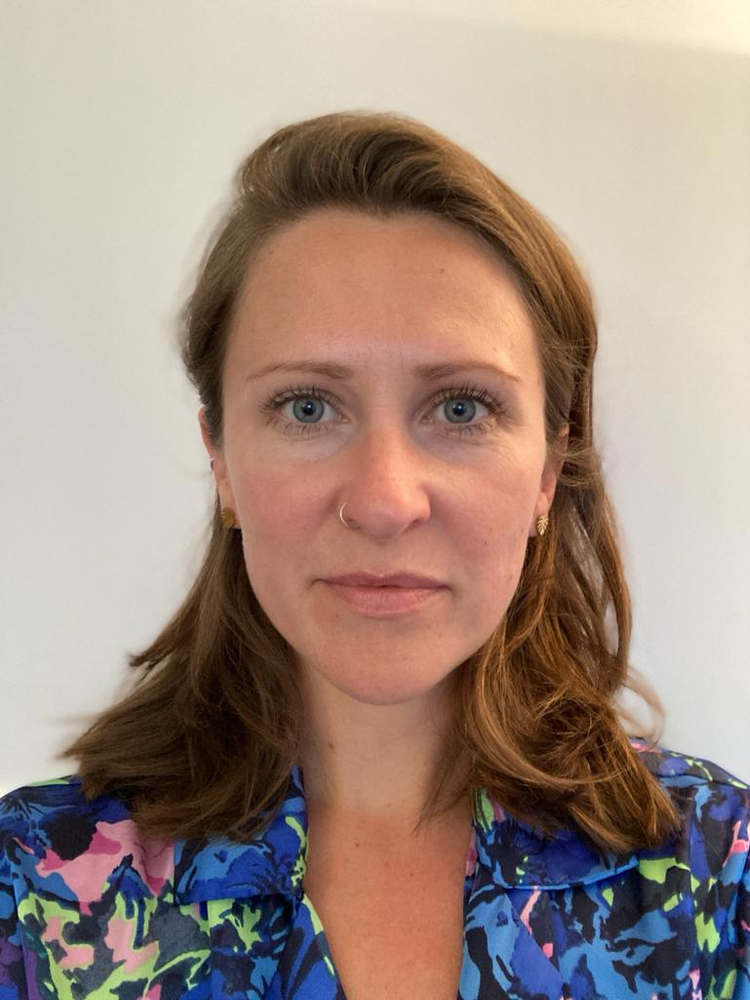

About Me

In gestalt therapy the client and therapist work together to build awareness of the client's present experience and where they might be stuck, and to deepen the client's understanding of themselves and what they might want or need. Gestalt is relational, meaning the relationship between client and therapist forms a key part of the therapy.
I have worked on placement with clients on areas including depression and anxiety, grief and loss, relationship issues, living with neurodivergence and chronic illness, disordered eating, body issues, identity and sexuality.
I aim to create a safe space for the client to explore whatever they might be struggling with, and to experiment with what else might be possible. In couple therapy I work with the gestalt integrative model to support the couple's awareness of interlocking patterns, working towards creating space for more contact.
With a background in education, language and communication, and an interest in movement and the body, I work creatively to support the client's clarity of how they are, and how they want to be. After my experience of living abroad, I am interested in identity, culture and the individual's experience of home and belonging.
I am an accredited and registered member of the UK Council for Psychotherapy (UKCP) and adhere to their code of ethics.